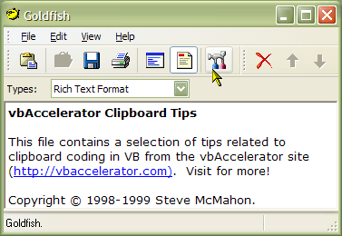

Goldfish Source Code (353K)
Goldfish Source Code (353K)
 VB5 Goldfish Executable (149K)
VB5 Goldfish Executable (149K)
 VB6 Goldfish Exectuable (148K)
VB6 Goldfish Exectuable (148K)
 19 Dec 2002
19 Dec 2002
vbAccelerator CoolMenu Toolbar and Menu controls version 3 incorporated.
XP Visual Styles implemented
Stability updates.
 Subclassing Without The Crashes
Subclassing Without The Crashes
 Add Your App to the Systray the Easy Way
Add Your App to the Systray the Easy Way
 Two code only solutions for displaying Common/Dialogs
Two code only solutions for displaying Common/Dialogs
 vbAccelerator No Status Bar Control
vbAccelerator No Status Bar Control
 PopupMenu DLL - Create Unlimited Popup Menus
PopupMenu DLL - Create Unlimited Popup Menus
 vbAccelerator Toolbar and CoolMenu Control v3.5
vbAccelerator Toolbar and CoolMenu Control v3.5
 Sophisticated Control Over Window Sizing and Moving
Sophisticated Control Over Window Sizing and Moving

Goldfish
Give your Windows Clipboard a Sense of History!
Goldfish is a demonstration project demonstrating the use of a number of vbAccelerator controls and code, all of which are compiled into the executable (with the exception of the Subclassing and Timer Assistant - sorry!). It also shows how to hook up to clipboard event notifications and how to store anything that's saved to the clipboard.
Goldfish acts as a history for the windows clipboard. Whenever the contents of the clipboard change, Goldfish makes a copy of the data in various formats. By default, it holds onto Text and RichText formats, but it can be configured to hold other types too, including Internet Explorer's HTML format - very useful for grabbing page fragments!
Because Goldfish stores a complete memory copy of each clipboard entry made, it allows you to restore older clipboard entries in their entirety to the clipboard. And as it has its own file format (the Goldfish Clipboard List, with the extension GCF) which can save multiple clipboard entries to a single file, you can also build up source code snippet lists and so on just by copying them to the clipboard. An edit toolbar and menu allows you to changing the order of items, deleting unwanted entries and to change the name text which appears in the list.
The site source code used in this sample includes:
- vbAccelerator CoolMenu, Toolbar and Rebar
- Popup Menu ActiveX DLL
- vbAccelerator RichEdit control
- cNoStatusBar Status Bar class
- Complete Registry control
- Customising Clipboard support
- SysTray the easy way
- Passing command line parameters to an existing instance of your app, and making sure only one instance runs.
- Common Dialogs without COMDLG32.OCX
- Using Subclassing to restrict form resizing